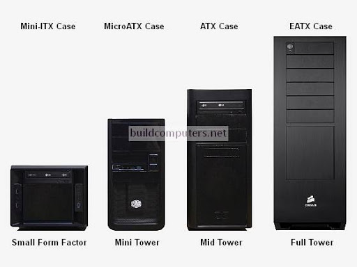
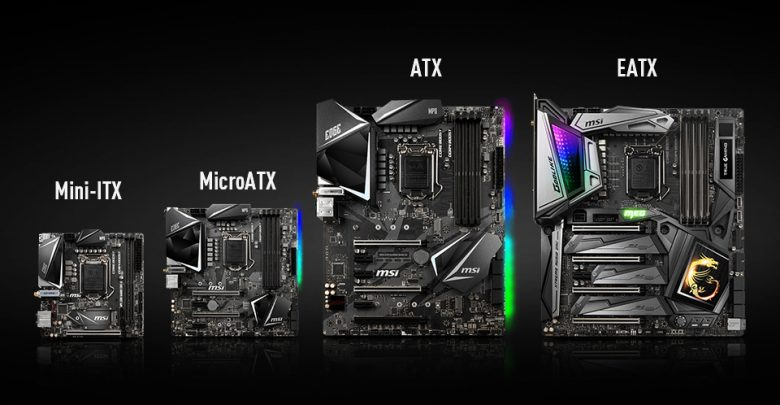
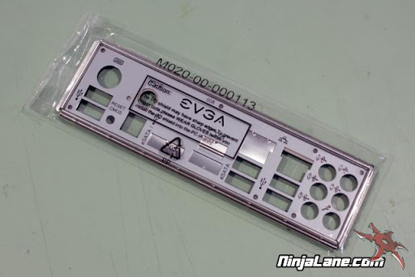

NUMBER ONE: Choosing a case for your computer that matches the size
of the motherboard you choose. This ranges in size from E-ATX, ATX, Mico-ATX from
largest to smallest. Luckly the cases and motherboards are sized the same. A ATX
will fit a ATX motherboard and below but wont fit an E-ATX. All cases come with standoffs
to install the motherboard in the case the right way and all motherboards come width a dust
cover that attaches to the back of the case first if it doesnt come preinstalled on the motherboard.



One of three columns